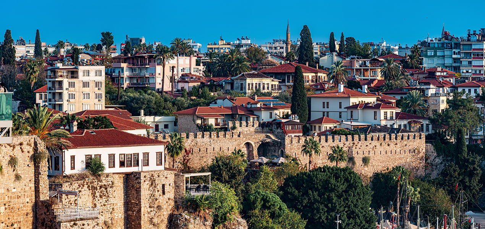
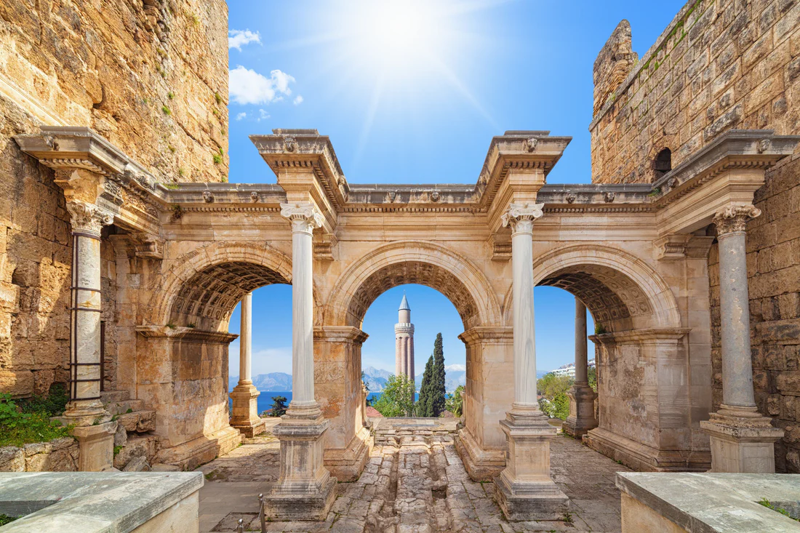
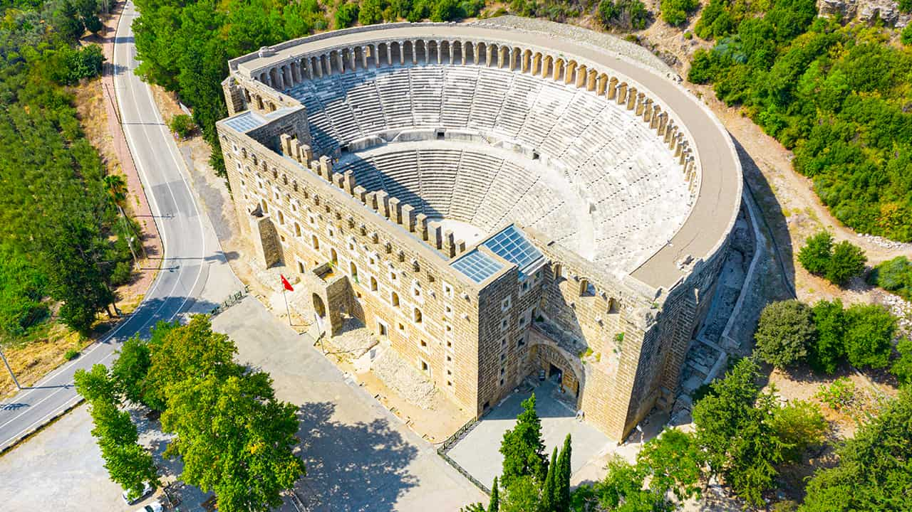
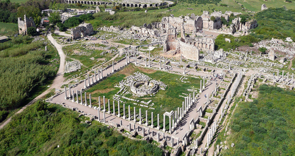
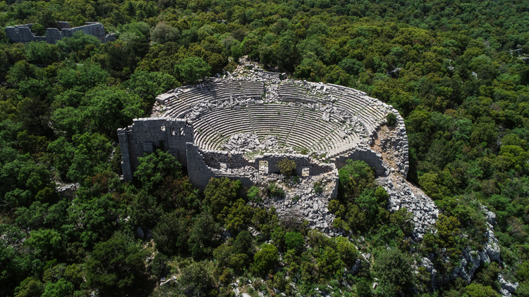
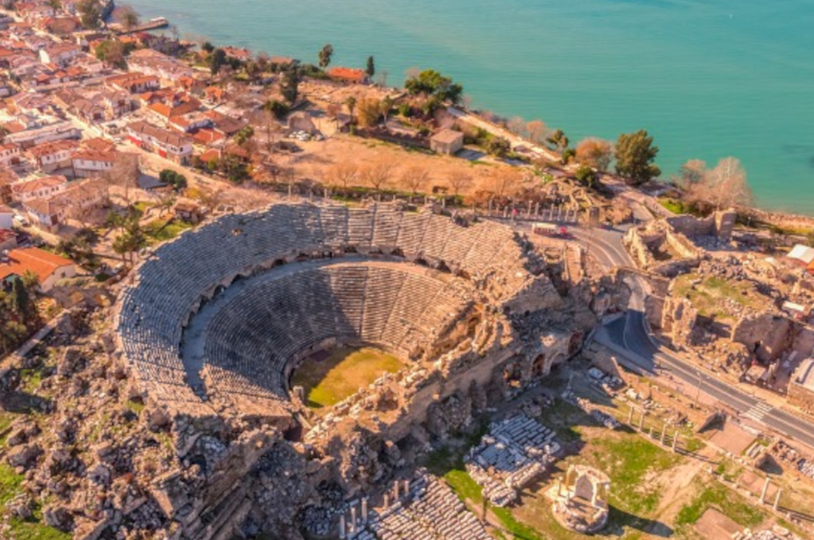

Antalya’daki Tarihi Yerler

Kaleiçi
Antalya’nın kalbinde yer alan Kaleiçi, Osmanlı, Roma ve Bizans izlerini taşıyan sokakları ve evleriyle tarihi bir atmosfer sunar.
Adres: Selçuk Mahallesi, Muratpaşa/Antalya
Ziyaret Saatleri: Her gün, gün boyu açık
Giriş: Ücretsiz
Müze Kart: Gerekli değil

Hadrian Kapısı
Roma İmparatoru Hadrianus’un Antalya ziyaretine ithafen inşa edilen bu ihtişamlı yapı, şehrin simgelerindendir.
Adres: Barbaros Mah., Muratpaşa/Antalya
Ziyaret Saatleri: Her gün
Giriş: Ücretsiz
Müze Kart: Gerekli değil

Antalya Müzesi
Antik döneme ait heykeller, mozaikler ve günlük yaşama dair objelerin sergilendiği müze, Türkiye’nin en büyük müzelerinden biridir.
Adres: Bahçelievler Mah., Konyaaltı/Antalya
Ziyaret Saatleri: Her gün 08:30 – 20:00
Giriş: Tam: 150 TL
Müze Kart: Geçerli

Aspendos Antik Tiyatrosu
Dünyanın en iyi korunmuş Roma tiyatrolarından biri olan Aspendos, hala konser ve etkinlikler için kullanılmaktadır.
Adres: Serik/Aspendos, Antalya
Ziyaret Saatleri: Her gün 08:30 – 19:00
Giriş: Ücretli (Tam: 200 TL)
Müze Kart: Geçerli

Perge Antik Kenti
Roma dönemine ait stadyum, hamam ve agora yapılarıyla ünlü Perge, tarihi doku arayanlar için büyüleyicidir.
Adres: Aksu/Antalya
Ziyaret Saatleri: Her gün 08:30 – 20:00
Giriş: Ücretli (Tam: 200 TL)
Müze Kart: Geçerli

Termessos Antik Kenti
Toros Dağları’nın zirvesinde kurulu olan Termessos, doğal yapısıyla büyüleyici bir antik kent deneyimi sunar.
Adres: Döşemealtı/Antalya
Ziyaret Saatleri: Her gün 08:00 – 17:00
Giriş: Ücretli (Tam: 100 TL)
Müze Kart: Geçerli

Side Antik Kenti
Deniz kenarında konumlanan bu antik şehir, tapınakları ve tiyatrosuyla tarihi güzellikleri sahil manzarasıyla buluşturur.
Adres: Side, Manavgat/Antalya
Ziyaret Saatleri: Her gün
Giriş: Ücretsiz (Bazı bölümler ücretli olabilir)
Müze Kart: Kısmen geçerli